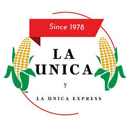
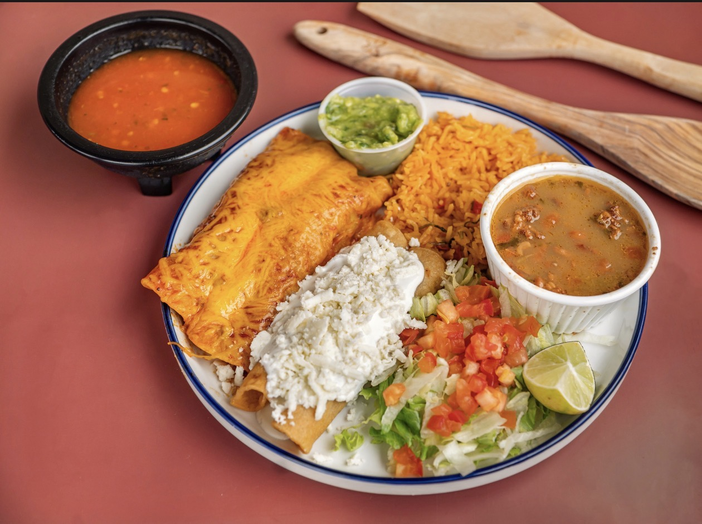

Breakfast
Tacos, burritos, huevos rancheros, machacado and more.

La Unica and La Unica Express share one menu full of favorites — tacos, tamales, fajitas, breakfast, burritos, plates and family meals.

Everything customers already love — at both La Unica and La Unica Express.
Tacos, burritos, huevos rancheros, machacado and more.
A local favorite available in meals and larger orders.
Perfect for feeding the whole crew at home or work.
This refreshed design adds more depth, visual contrast, and personality so the site feels less flat and more like a real restaurant brand.
Street-style tacos, savory burritos, fajitas and traditional plates that feel like comfort food and celebration food at the same time.
La Unica has been part of Lufkin for decades, and the design now reflects that with a stronger, more memorable personality.
Family meals and catering-friendly options make it easy for people to order for home, work and events.
Visit the original La Unica or stop by La Unica Express. Both locations share the same menu.
1614 N Raguet St
Lufkin, TX 75904
200 N Timberland Dr
Lufkin, TX 75901
Graduations, family gatherings, work lunches and celebrations are even better with tacos, fajitas, tamales and your favorite sides.
This section can later become your AI catering assistant and quote form.
La Unica has been serving the community for decades, and La Unica Express gives customers another convenient way to enjoy the same menu and familiar flavors.
This section is ready for your real story whenever you want to add the family background, how the restaurant started, or what makes La Unica special to the community.